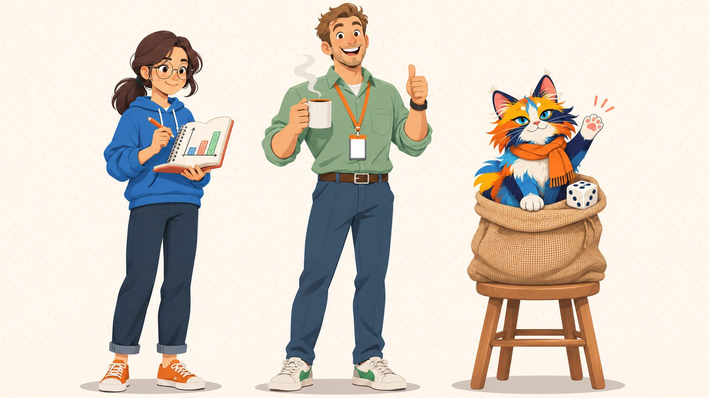
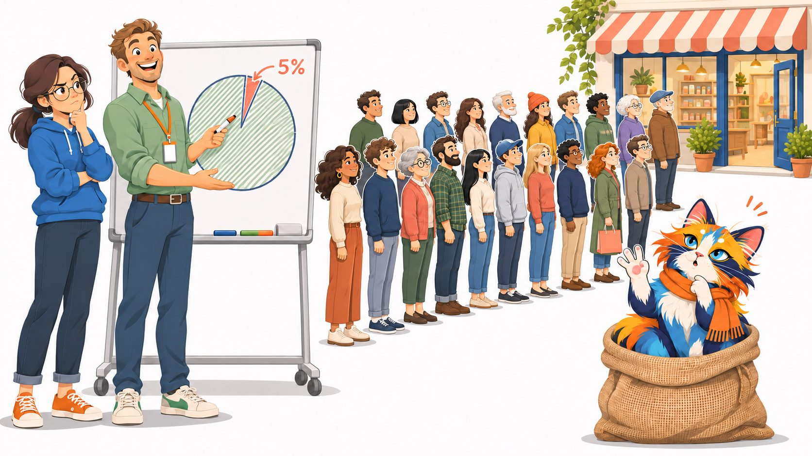
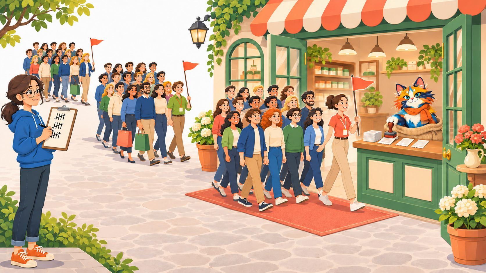
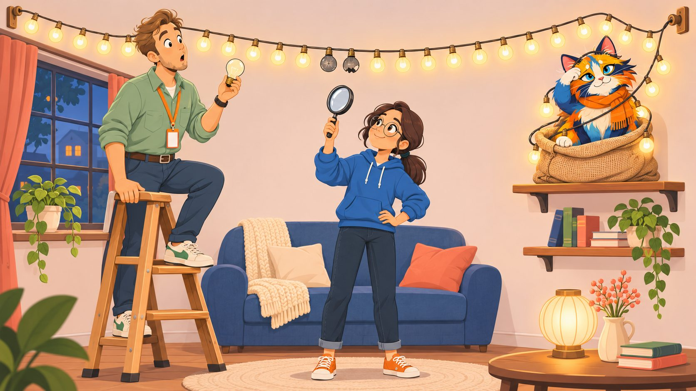
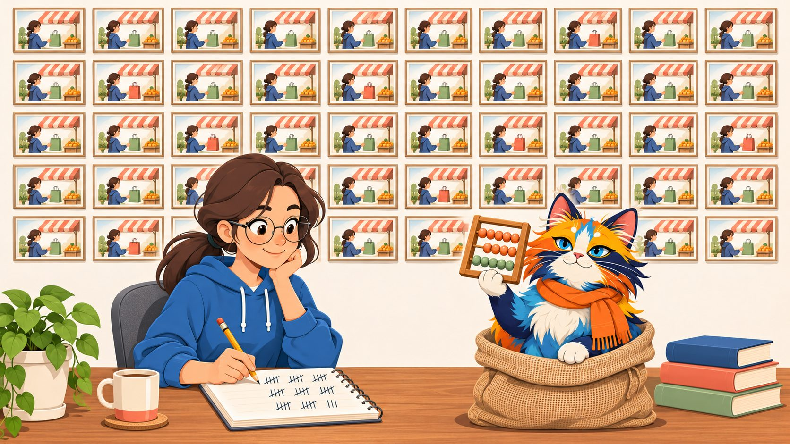
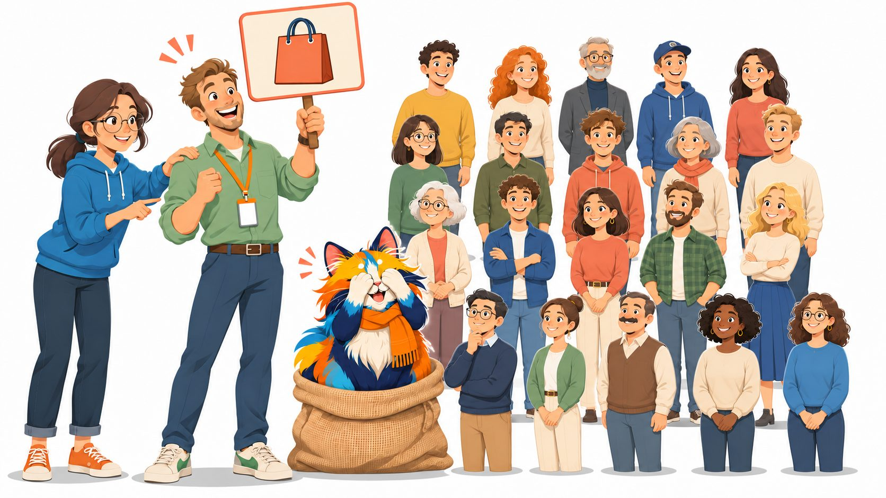

Часть 0 · глава 1
Вероятность — это доля в штуках

Знакомься с командой, с которой мы пройдём весь курс.
В каждой главе Боб задаёт вопрос, Алиса разбирается, а Котейка подбрасывает кубики. Ты — вместе с Алисой: сначала предсказываешь, потом проверяешь руками и в коде.
Один алгоритм на весь курс
Весь курс строится вокруг шести шагов, которые помогают отличить сигнал от шума. Каждая глава добавляет шаг. Эта глава — о первом: что здесь случайно и как говорить о случайности числами.
- 1. Что здесь случайно?
- 2. Как распределено?
- 3. Центр и разброс
- 4. Насколько шумит среднее
- 5. Сколько стандартных ошибок до порога
- 6. Ответ бизнесу
Главная мысль главы: перестань думать о «шансах» и представь, что ситуация повторилась тысячу раз. Тогда вероятность — это просто доля случаев.
Бросаем монетку 10 раз. Сколько выпадет орлов?
Все знают ответ «половина». Но в скольких сериях из 10 бросков орлов будет ровно пять? Прикинь, а потом бросай.
Сколько орлов выпадает в серии из 10 бросков
столбик — доля серий с таким числом орлов · точка — сколько должно быть по теории
Доля орлов на длинной серии упрямо ползёт к ½ — это и есть вероятность. А короткая серия из 10 бросков ровно на «половину» попадает только в четверти случаев.
Кубик, монетка — и посетитель сайта
У кубика шесть граней, поэтому шестёрка выпадает в ⅙ бросков: из 600 бросков — около 100. У монетки орёл выпадает в половине бросков.
Посетитель сайта — та же монетка, только «кривая»: сторона «купил» выпадает не в половине случаев, а, скажем, в 5%. Из 1000 посетителей купят около 50. Эти 5% и называют конверсией.
Запомни образ: любой случайный исход — это монетка или кубик, который бросают снова и снова. Вероятность — доля нужного исхода в длинной серии бросков.
Событие, вероятность, случайная величина

Есть опыт, который можно повторять: бросок монетки, бросок кубика, визит на сайт.
Случайная величина — то, что мы наблюдаем в опыте: сторона монетки, число очков на кубике, купил ли посетитель. До опыта мы не знаем, что выпадет.
Реализация — конкретное значение в конкретном опыте: в этом броске выпал орёл, в следующем — решка. Каждый бросок даёт одну реализацию.
Событие — утверждение про реализацию, которое либо верно, либо нет: «выпал орёл», «выпало чётное». Вероятность события — доля опытов, в которых оно верно, если повторять очень много раз. Записывают P(событие), это число от 0 до 1.
«чётное» — ½«купил» — 5%
Из одних и тех же опытов можно собрать новую случайную величину. Бросили монетку 10 раз — получили число орлов: его реализации 0, 1, …, 10. Пришли 20 посетителей — число покупателей: от 0 до 20. Чек и длина сессии — тоже случайные величины, только их реализаций очень много.
Гистограмма на карточке с монеткой — как раз картина случайной величины «число орлов из 10»: какие реализации она принимает и как часто. Такая картина называется распределением — о нём будет отдельная глава.
Дальше в этой главе — три правила для событий, которые удобно проверять «в штуках»: представь 1000 повторов и посчитай, сколько раз случилось нужное.

Ровно один из двадцати — как часто?
Это та же задача, что с монеткой: 20 бросков «кривой монетки», у которой «купил» выпадает в 5% случаев. Боб ждёт, что ровно один покупатель будет почти всегда. А в какой доле групп по 20 человек он будет на самом деле?
Напиши число — на следующей карточке запустим магазин и сравним.
Магазин, в который приходят группами по 20

Каждая точка — посетитель, красная — купил. Запускай группы и смотри, сколько покупателей в них оказывается.
покупателей в группе · высота — доля групп
Общая доля покупателей быстро становится близкой к 5% — это и есть вероятность. Но отдельные группы ведут себя совсем не «по среднему»: ровно один покупатель только примерно в 38% групп, ни одного — примерно в 36%, а в каждой четвёртой группе покупателей двое и больше.
«5%» описывает долгую серию, а не каждую маленькую порцию. Чем меньше порция, тем сильнее она прыгает. Это первая встреча с шумом — дальше в курсе мы научимся его измерять.
Три правила в штуках
Не случилось: 1 − p
Если покупка случается в 5% случаев, то в остальных 95% её нет. P(не A) = 1 − P(A)
«И» для независимых событий: умножаем
Двое посетителей покупают независимо — решение одного никак не влияет на другого, как две монетки. Из 10 000 пар первый купит в 500, и из этих 500 второй тоже купит в 5% — это 25 пар. Доля от доли:
P(A и B) = P(A) · P(B) = 0,05 · 0,05 = 0,0025
«Или» для несовместных событий: складываем
Несовместные — значит, не могут случиться одновременно: «в группе 0 покупателей» и «в группе ровно 1». Тогда P(0 или 1) = P(0) + P(1) ≈ 0,36 + 0,38 = 0,74. Если события могут совпасть, сумма посчитает общие случаи дважды: P(A или B) = P(A) + P(B) − P(A и B).

«Хотя бы один»: через противоположное
«Хотя бы один» — это «не ни одного». Посчитать «ни одного» легко: умножить вероятности «не случилось» для каждого.
P(хотя бы один из n) = 1 − (1 − p)n
Лампочки. В партии 100 лампочек, каждая перегорает за год с вероятностью 1%, независимо от других.
Интуиция подсказывает «1% на лампочку — значит, почти ничего не сломается». Но при сотне лампочек хотя бы одна перегорит почти в двух случаях из трёх. Тот же эффект в продукте: если у каждого из 100 сервисов 1% риска упасть сегодня, хотя бы один упадёт почти наверняка.
Рецепт для любой задачи этой главы

- Назови событие словами. «Хотя бы одна лампочка перегорела», а не «вероятность лампочек».
- Представь 1000 повторов. Сколько раз из 1000 случится событие? Считай штуками, а не процентами.
- Запиши формулой — и проверь, что «и», «или», «хотя бы один» применены правильно.
- Проверь симуляцией. Десять строк кода — и ты видишь, сошлось ли.
Симуляция магазина
Этот код повторяет 100 000 групп по 20 посетителей. Запусти его, потом поменяй конверсию или размер группы и посмотри, что станет с долей групп «ровно один».
Теперь сам
Допиши функцию: вероятность, что из n независимых событий с вероятностью p случится хотя бы одно. Нажми «Проверить» — проверка прогонит её на нескольких примерах.

«Пять процентов — значит, один из двадцати»
Это верно только в среднем на длинной серии. В конкретной группе из 20 человек ровно один покупатель бывает лишь в 38% случаев. Отсюда частая ошибка в продукте: смотреть на маленький срез (один день, один город, двадцать пользователей) и удивляться, что метрика «скачет». Она и должна скакать.
Вторая ловушка — складывать вероятности, когда события могут случиться вместе. Вероятность хотя бы одной шестёрки за шесть бросков — не 6 · ⅙ = 1, а 1 − (5/6)6 ≈ 67%.
Три задачи и как на них отвечать

Схема ответа одна: переформулируй → посчитай в штуках → запиши формулу → (если можно) проверь симуляцией → скажи вывод одной фразой.
P(A) = 0,6, P(B) = 0,7. Могут ли события A и B быть несовместными?
Переформулирую: могут ли A и B ни разу не случиться вместе?
В штуках: из 100 повторов A случается в 60, B — в 70. Вместе это 130 «случаев», а повторов всего 100 — значит, минимум в 30 повторах они совпали.
Формула: P(A и B) ≥ P(A) + P(B) − 1 = 0,3.
Вывод: нет, не могут — они обязаны пересекаться хотя бы в 30% случаев.
Партия из 100 лампочек, каждая перегорает с вероятностью 1%. Какова вероятность, что не перегорит ни одна?
В штуках: одна лампочка выживает в 99 случаях из 100, две — в 99% от 99%, и так 100 раз.
Формула: 0,99100 ≈ 0,366.
Вывод: около 37%; значит, почти в двух случаях из трёх хотя бы одна лампочка перегорит.
Кубик бросают 6 раз. Какова вероятность, что все шесть результатов разные?
В штуках: первый бросок — любой, второй должен не совпасть с первым (5 из 6), третий — с двумя первыми (4 из 6), и так далее.
Формула: 6/6 · 5/6 · 4/6 · 3/6 · 2/6 · 1/6 = 6! / 66 = 720 / 46 656 ≈ 1,5%.
Вывод: полтора процента — «все разные» встречается гораздо реже, чем кажется. Это младший брат парадокса дней рождения из главы 2.
- Вероятность — доля случаев в длинной серии повторов. Считай в штуках на 1000.
- P(не A) = 1 − P(A).
- Независимые «и»: умножаем. Несовместные «или»: складываем. Пересекаются — вычитаем пересечение.
- «Хотя бы один» = 1 − (1 − p)n. Никогда не p · n.
- Маленькие порции скачут вокруг среднего — это шум, а не поломка.

Дальше — глава 2 «Условная вероятность и Байес»: тест на редкую болезнь, антифрод и Монти Холл. Скоро.